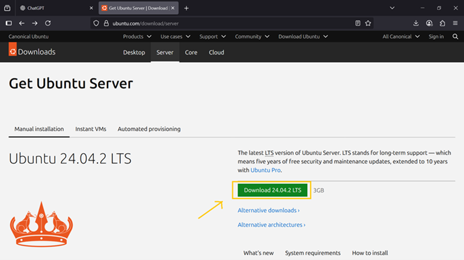
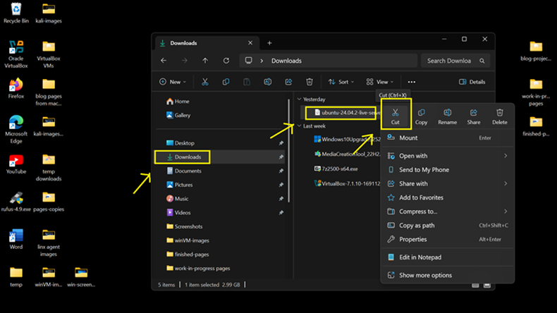
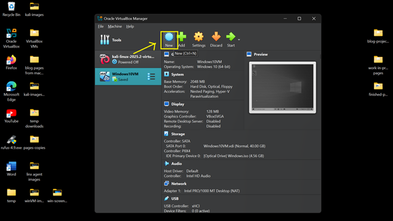
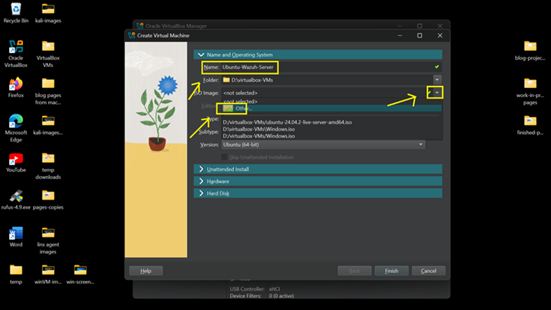
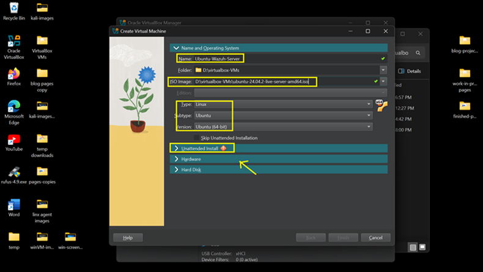
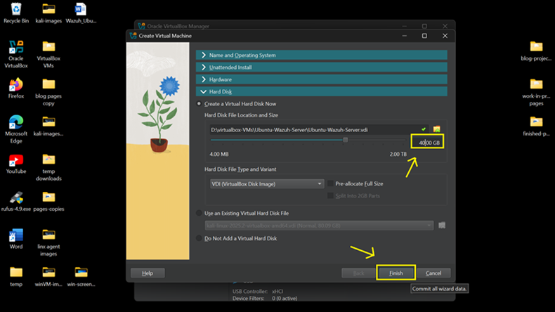
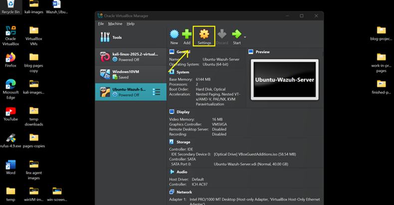
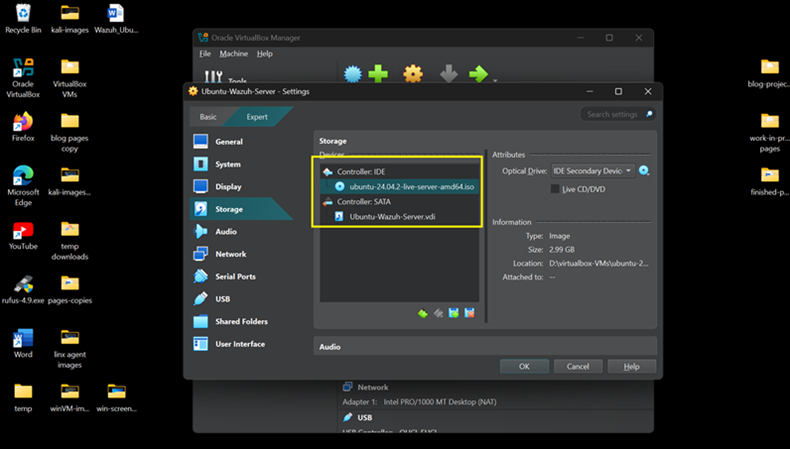

Overview
This guide covers downloading Ubuntu Server, creating a VirtualBox virtual machine, assigning system resources, and completing the initial deployment. The server will later be used as the foundation for Wazuh SIEM and security monitoring services.
What You Will Learn
- Download Ubuntu Server installation media
- Create an Ubuntu Server VirtualBox VM
- Allocate CPU, memory, and storage resources
- Configure VirtualBox settings
- Validate server installation and connectivity
Requirements
- Oracle VirtualBox installed
- Ubuntu Server ISO
- Internet connectivity
- Minimum 40 GB available storage
Step 1 — Download Ubuntu Server ISO
- Navigate to the Ubuntu Server download page.
- Download Ubuntu Server 22.04 LTS or 24.04 LTS.
- Save the ISO file to the VM storage location.


Step 2 — Create Ubuntu Server VM
- Open VirtualBox.
- Select New.
- Name the VM Ubuntu-Wazuh-Server.
- Select Linux → Ubuntu (64-bit).
- Attach the Ubuntu ISO.


Step 3 — Configure Virtual Hardware
- Enable Unattended Installation.
- Create a local username and password.
- Assign system resources.
- Memory: 4096 MB recommended
- Processor: 2 CPU cores
- Disk: 40 GB


Step 4 — Post-Installation Configuration
- Allow the installation process to complete.
- Perform the initial boot.
- Shut down the VM.
- Open VirtualBox Settings.
- Disable the Floppy Drive under System → Motherboard.
- Verify storage controller and ISO configuration.


Step 5 — Verify Ubuntu Server Operation
- Start the virtual machine.
- Log in using the configured credentials.
- Verify network connectivity.
- Confirm the server boots without errors.
Install Complete
Ubuntu Server is now ready. Next will be installing Wazuh SEIM.